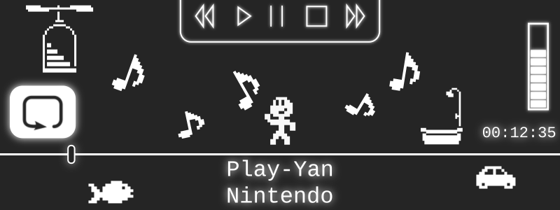
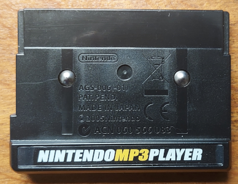
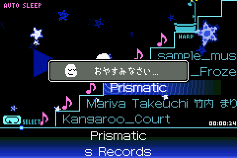

Rewind, Resume, Repeat...
Last year, I wrote about my attempts to emulate the Nintendo Play-Yan, a specialized cartridge for the GBA that played movies and music from an SD card. To recap, while I had made great progress in terms of research, actually running the Play-Yan on a PC amounted to browsing menus. No sound or video output was possible in my emulator, GBE+. Accessing multimedia content is the entire point of the Play-Yan, so the last thing missing was also the most crucial element! As I mentioned previously, the Play-Yan is just so insanely complicated that it wouldn't easily fit into a single, readable article. Additionally, the Play-Yan isn't even a single product. I started investigating all of this stuff back in May 2020, and only just now have I mostly finished documenting the hardware.
Today, however, I'm finally proud to say that the Play-Yan has largely been conquered. Nearly everything you could want to do with it has been recreated through emulation. If, for whatever reason, users want GBE+ to act as their own dedicated media player, they can do so when emulating the Play-Yan, Play-Yan Micro, or Nintendo MP3 Player. I dunno why anyone would do that, but we don't really live in normal times anymore, so... yeah. Achieving this was no small feat. After having spent years studying these devices on and off again, the whole process certainly felt like a slugfest. To say I feel exhausted is a bit of an understatement.
Despite the struggle, preserving the Play-Yan models was well worth it. Each of Nintendo's products offers a curious look back into the world of mobile media when phones could barely play anything decent. Even if you don't remember those dark days, a time when you relied on various TV commercials just to get basic stuff like ringtones, you can imagine why having the ability to put any video or song you wanted on the GBA would have been a big deal. Compared to some of the relatively dinky flip-phones of the mid-2000s, the GBA's 240x160 screen was a portable IMAX movie theater. The ability to bypass the handheld's typically compressed audio when plugging in headphones made it a cheap, viable MP3 player as well. The push for consoles to also double as on-the-go media players was reflected in Nintendo's competition, the PlayStation Portable.
In short, the Play-Yan and Nintendo MP3 Player filled important roles before phones evolved into the modern devices we know today. These unique cartridges served as 'in-between' tech in many respects. Especially regarding video, there were few good and inexpensive options available for consumers back then. While Nintendo's efforts to bring digital entertainment to their platform wasn't quite revolutionary or world-changing, it did play a part in the gradual shift towards getting HD content in the palm of our hands.
The format of this edition of Edge of Emulation will be a little different from the others. While I typically try to tell a complete narrative of the reverse-engineering process, this article will break down emulation of the Play-Yan and Nintendo MP3 Player into distinct segments. Each represents a unique challenge or issue that had to be overcome. However, it won't necessarily be in chronological order, mainly because actual development was all over the place over the course of months (and years in some cases). Some details will be abbreviated to prevent this article from becoming too bloated and hard to follow for non-technical readers. Hopefully this provides a smoother, more easily digestable article.
Background Noise
Before going any further, however, let's talk about the Nintendo MP3 Player (hereby referred to simply as the "NMP") first. While the original Play-Yan and Play-Yan Micro are essentially the same devices running slightly different software, the NMP is something like a foreign cousin. Both Play-Yan models were released in Japan, but the NMP came to Europe exclusively. Unlike its predecessors, the NMP was strictly for music. Nevertheless, the NMP used the same cartridge shell as the others and had a software interface that was copy+pasted from the Play-Yan Micro. The innards of the NMP are worlds apart though. Previously the Play-Yans packaged an Alpha Mosiac VC01 to handle audio/video, but the NMP replaced it with... um, something else. I haven't been able to ID the component yet, but it's definitely not the same as before.
Regardless of these differences, Nintendo decided to lump all 3 cartridges together as one big group of products. The Play-Yans are given the model number AGS-006, meanwhile the NMP has the model number AGS-006(-01). Now, Nintendo has had a somewhat stable model numbering system for decades, but this is the first time I've every seen a "(-01)" appended to anything. Although Nintendo has used model numbers to refer to classes of cartridge shells (e.g. AGB-002 = Generic GBA carts, AGB-013 = Large GBA carts like Boktai or Yoshi Topsy Turvy), this seems to be a special case.
Note that the boxes for each Play-Yan and the NMP make explicit mention of its model number as AGS-006/AGS-006(-01), which isn't the case for other GBA cartridges. Additionally the manuals for Play-Yans and NMPs list the model number as part of the technical specifications such as supported MP3 bitrates and video sizes. As far as I can tell, the AGS-006 model number refers directly to hardware inside the cartridge rather than the plastic mold it comes in. This makes sense considering the NMP has the same shell as the Play-Yans but different parts underneath. Anyway, despite having brand new stuff inside, the NMP became part of the Play-Yan family, so-to-speak.
These days, the NMP is pretty hard to come by. It used to be cheaper than any of the Play-Yans on the second-hand market, but prices for all 3 products have shot up over the years. Thankfully, Endrift, the developer of mGBA had a spare and was willing to part with it. Running homebrew tests and grabbing data from the original Play-Yan was key to making so much progress in first article I wrote last year. Having the NMP on hand to probe would likewise prove essential, so Endrift deserves a lot of credit here!

The Nintendo MP3 Player could easily be mistaken for a Play-Yan if it weren't for the label.
Examining the Nintendo MP3 Player
Although the Play-Yan models and NMP have many similarities, their hardware and software are still fundamentally distinct from one another. Each must be reverse-engineered individually. To illustrate this point, even though GBE+ could boot up the Play-Yans just fine, it could not do the same for the NMP. Emulation got stuck on the old "Health and Safety" screen Nintendo started using around the mid-2000s and wouldn't move past that. Naturally, this was due to the fact that the NMP operated in manner that wasn't quite like the Play-Yan. The first goal, therefore, should be getting a general idea of how the NMP works, particularly when the GBA first powers on.
To see what exactly the NMP was doing, I had GBE+ record a log of all potential memory-mapped I/O registers that were accessed. The results indicated that the NMP used addresses in the 0xE000000 range to control hardware within the cartridge. The data contained a few scattered reads and a large amount of writes, so my first assumption was that the NMP was uploading default firmware from ROM. The Play-Yans have this same functionality, which ensures that a device always has stable firmware on boot. This prevents an invalid or corrupt firmware update file from bricking anything. After a bit of analysis, I identified the purpose of four registers and gave them names:
NMP_CONTROL
ADDRESS : 0xE000000INFO : Sends commands to the cartridge.
NMP_DATA_IN
ADDRESS : 0xE004000INFO : Input data for the cartridge.
NMP_DATA_OUT
ADDRESS : 0xE006000INFO : Output data from the cartridge.
NMP_PARAMETER
ADDRESS : 0xE008000INFO : Selects data indices and commands.
Each of the above registers was 16-bits wide. Interestingly, the NMP's registers were all Big-Endian (or MSB-first) values. This clashes with the CPU of the GBA, which stores all values as Little-Endian (or LSB-first). To get around this issue, the NMP's software accessed the cartridge's registers one byte at a time instead of in 16-bit units. I noticed this behavior when looking at how the NMP writes to firmware, as shown below:
NMP_CONTROL_LO = 0x10 NMP_CONTROL_HI = 0x10 NMP_PARAMATER_LO = INPUT_PARAMETER_HI NMP_PARAMETER_HI = INPUT_PARAMETER_LO NMP_CONTROL_LO = 0x00 NMP_CONTROL_HI = 0x00 NMP_PARAMATER_LO = FIRMWARE_ADDRESS_HI NMP_PARAMETER_HI = FIRMWARE_ADDRESS_LO NMP_DATA_IN_LO = FIRMWARE_DATA_HI NMP_DATA_IN_HI = FIRMWARE_DATA_LO ... (repeat NMP_DATA_IN writes as needed) ...
On the Play-Yan models, loading firmware eventually triggers a Game Pak IRQ. This alerts the software that the cartridge is ready to continue the boot process. I figured that the NMP would do something likewise. The actual data written to firmware isn't important for GBE+, as it does not try to emulate the low-level behavior of each cartridge. Rather, things such as MP3 decoding and MP4 video playback are handled at a higher level, as I will discuss later. Anyway, after putting a number of bytes into firmware, the NMP sat idle, apparently waiting for that Game Pak IRQ, as expected.
Inspecting Game Pak IRQs
Unfortunately, simply forcing a Game Pak IRQ to fire wasn't enough to get the NMP booting. As with the Play-Yan, Game Pak IRQs are associated with specific commands sent to the cartridge or the completion of specific actions inside the cartridge's hardware. After a Game Pak IRQ is raised, the GBA's CPU reads a small amount of data from the cartridge with information related to certain tasks. The command to a play music file, for example, will periodically return data about the current timestamp. Typically the first bit of data contains a Command ID that the Play-Yan's software uses to determine what actions it needs to take after a Game Pak IRQ.
The problem here is that there's no easy way to capture data sent from the cartridge to the CPU. In the last article, I wrote about a "viral" homebrew MultiBoot program I created that would hijack the initial boot process of the Play-Yan, setup its own interrupt handling code, manually intercept data from Game Pak IRQs, export those bytes via the GBA-to-GCN cable to a hacked Wii, and ultimately save everything to that system's SD card. Despite being quite complex, it still managed to work reliably and consistently. I decided to make a version of this homebrew tailored for the NMP.
This new homebrew package, though designed just like the last one, didn't handle things so well. After setting up my Wii, connecting all the cables, and launching everything, my homebrew only returned the results of 2 Game Pak IRQs. I thought this was odd, as there should have been a fair number of IRQs fired during boot. I spent about a week painstakingly double-checking and triple-checking each individual instruction of the homebrew, which was crafted in ARM assembly. Every test led me to one conclusion: there simply wasn't anything wrong with the code.
These bytes were the only IRQ data I managed to extract from the NMP.
The viral homebrew was functioning perfectly as intended. As it turned out, the NMP was just overwriting the interrupt handling code, which sits in the GBA's RAM. I remembered that this happened on the Play-Yan as well, but typically only when trying to play audio or video files. I never expected the NMP to begin editing its interrupt routines so early in the boot process. While I could have come up with even more sophisticated homebrew to get around the problem, I decided that I would try to carry on without pulling data from the NMP. Instead, I'd have to rely on Ghidra and my wits. It may come as a surprise to some, but in many instances, just taking an educated guess is enough to advance the reverse-engineering process.
At any rate, the very first Game Pak IRQ triggered on the NMP returns the value 0x8001. This Command ID signals to the CPU that the NMP's firmware has finished loading. With some quick hacking, I was able to make GBE+ mimic this. Afterwards, the NMP's software began reading and writing to its registers once more. It appeared I was on the right track for a bit. The software eventually got stuck in a loop of some sort though. There was some kind of timeout mechanism that caused the software to reload firmware and try again, and again, and again. Going through GBE+'s logs, some of the I/O writes caught my eye. At first glance, I had a hunch that the software was in fact trying to send a command to the NMP.
Handling NMP Commands and Indices
Before the NMP can accept any commands, its software must first select what is called an index. I'm not sure that's the proper technical name for it, but as there was no documentation for the hardware, it seemed like an adequate label. Anyway, an index determines the "mode" for different types of data being written to or read from the cartridge. For example, one index is used to read ID3 data from an MP3 file, another index is used to access SD card data such as filenames, and yet another index is used to read 8-bit sound samples. The exact role of each index was not immediately apparent, but I was able to make a few good guesses at first. The process of choosing an index looks like this:
NMP_CONTROL_LO = 0x10 NMP_CONTROL_HI = 0x10 NMP_PARAMATER_LO = 0x00 NMP_PARAMETER_HI = 0x00 NMP_CONTROL_LO = 0x00 NMP_CONTROL_HI = 0x00 NMP_PARAMATER_LO = ACCESS_INDEX_HI NMP_PARAMETER_HI = ACCESS_INDEX_LO
In practice, setting the index is not all that different from choosing a firmware address to write to. The only difference is that the first write to NMP_PARAMETER is always zero. There are only a limited number of available indices, so this helps to avoid any confusion about what action is being taken. For reference, here is a list of all known indices:
INDEX 0x0000 :: Access SD Card DataINDEX 0x00FF :: Data FlushINDEX 0x0100 :: Get Game Pak IRQ Status DataINDEX 0x0101 :: Access ID3 DataINDEX 0x010F :: Send Command / Get TicksINDEX 0x0110 :: Check Cartridge I/O Busy FlagINDEX Variable :: Left Audio BufferINDEX Variable :: Right Audio BufferAfter each Game Pak IRQ, the 0x0100 index was selected. Following that, the NMP's software read 16 bytes from NMP_DATA_OUT. Since Game Pak IRQs for the NMP happen in response to commands or due to processing in the cartridge's hardware, the purpose of this index was to read back small pieces of information related to those tasks. Namely, this index should always return the relevant Command ID, along with any parameters. This explained how the value 0x8001 was returned after the first Game Pak IRQ. I decided to call these 16 bytes the Status Data.
The next important index was 0x010F, which specified a command to send to the NMP. The process of writing commands was really straightforward:
NMP_DATA_IN_LO = COMMAND_ID_HI NMP_DATA_IN_HI = COMMAND_ID_LO NMP_DATA_IN_LO = PARAMETER_HI NMP_DATA_IN_HI = PARAMETER_LO ... (repeat NMP_DATA_IN writes as needed) ... NMP_CONTROL_LO = 0x04 NMP_CONTROL_HI = 0x04
Commands for the Play-Yan can have many different parameters. Sometimes they're as simple as a "0" or a "1", and sometimes they're multiple numbers and even strings. On the NMP, the CPU merely writes to NMP_DATA_IN for however many bytes it needs to. The first command sent to the NMP was 0x0300. At the time, I had no idea what the purpose of each command on the NMP was. Nevertheless, I assumed it would be roughly equivalent to the Play-Yan. The Command IDs wouldn't match exactly, but their functions would be more or less the same. The first command had an ASCII string as a parameter, which was a huge clue.
That string was "meteor.fup". Right away, I recognized that this command was looking for a firmware update file (FUP). The most interesting part of this discovery was the fact that Nintendo never released a firmware update for the NMP. Even so, they added the ability to update the firmware, in case they ever decided to go that route. Some users on Reddit have previously talked about the "meteor.fup" firmware file after uncovering the string buried in the NMP's ROM. However, I don't think anyone knew that there was actual executable code on the NMP designed to handle the update.
As previously mentioned, emulation of the NMP got stuck after sending the first command. The software was waiting for a Game Pak IRQ to fire, and it wanted the appropiate 16-byte Status Data as well. I didn't know what the Status Data should have looked like, so I looked at the NMP's code through Ghidra. Obviously the Command ID would be part of the data, but I didn't know what if any additional parameters were present. As it turned out, the 0x0300 command returned a single boolean flag representing whether or not the firmware update file was found.
I implemented this command in GBE+, and out of curiosity, I decided to see what would happen if it tried to actually load firmware. The NMP's software sent another command, 0x0301, to open the firmware file. The Status Data for this command contained a 32-bit value for the file size in bytes, although this was ultimately masked to 16-bits (or 65535 bytes max). The data was read from the SD card and verified. If validation failed, the software would abort any attempts to actually overwrite firmware. Whether or not loading firmware was successful, the software sent a new command, 0x0303 to terminate firmware file operations. Despite the fact that no such "meteor.fup" update ever existed, many unknown details about it were finally revealed!
Once these firmware commands were handled by GBE+, I expected the NMP to resume booting. Unfortunately, it still got stuck. The culprit appeared to be the 0x010F index. Once the index was selected, the software would try to read it over and over again. At some point, it timed out and caused a mini-reset where firmware was reloaded. I saw that the index wasn't writing a command, which seemed weird. Apparently it had some kind of dual-role. I managed to slightly retool my viral homebrew to intercept the values read from the index. The results showed a single value that simply incremented by different amounts each time the index was accessed.
Puzzled, I dove into Ghidra and peeked at the code. Indeed, the software checked to make sure that the latest value read from the 0x010F index was always greater than the last. If the value did not increase for 1 full second, the program would freak out. It seemed as if the index was used to keep track of the NMP's internal "tick rate", or something along those lines. Nothing like this existed on the Play-Yans, so it was something of a surprise to see. At any rate, once that behavior was emulated, GBE+ finally made it to the next command.
Sample data from the 0x010F index, taken from a real NMP. Notice how the values increment slightly on each reading.
Managing Files and Folders
The next command was 0x0010. Since I knew nothing about it, I simply made sure that GBE+ at least returned the correct Command ID when reading the Status Data for the Game Pak IRQ. Doing this much actually caused the NMP to boot to the next screen! Here, the user had to choose which interface theme they wanted. Normally, after selecting either the "Mario" or "Pictogram" style, the software displays a list of music files and folders. However, it refused to proceed in this case. There was a slowly flashing SD card logo on the side of the screen, which indicated that the program was waiting on data from the card to finish processing. At this point, a new command 0x0011 was endlessly called. Eventually I think some buffer must have overflowed because the NMP's software did another reset.
At last, some signs of progress!
This all strongly hinted that these new commands were related to file management. It would have mirrored what the Play-Yans did, which recursively read every file/folder on the SD card before entering the main menu. As further evidence, both commands read a large amount of bytes from the SD card, 528 to be exact. Using the debugger in GBE+, I tracked down where the NMP's software started handling that data. Most of it was dedicated to a null-terminated ASCII string, which I thought was likely the file or folder name. There was also a flag at the end, which I assumed determined if the string pointed to a file or a folder.
I set up GBE+ to return dummy data for a single MP3 file when the 0x0010 command was called, but the program still got caught in a loop sending the 0x0011 command. Although not apparent to me right away, I soon realized that since each of these commands only dealt with one file or folder at a time, they needed a way to signal that there was nothing else inside the current directory. Essentially, these commands were building a list, thus there had to be an end to that list. This was quite unlike how the Play-Yans worked, which specified exactly how many objects were present in a directory before reading all of that data at once.
By messing around with the Status Data for these two commands, I found a boolean flag that dictated the end of a list. There were still a few problems getting the format of the ASCII strings correct. The NMP mostly handles data in 16-bit units; strings are transferred 1 characters at a time, but have to be expanded to 16-bits. Normal ASCII is strictly 8-bits, so each character is padded with an extra byte (zeroes in this case). Complicating things further is the Big-Endian data format the NMP uses, so the high and low bytes had to be swapped. To demonstrate, the ASCII character for "A" is 0x41, which gets expanded to 16-bits as 0x0041 which gets byte-swapped to 0x4100. Initially, the software started to load the music menu, but reported SD card errors. A bit more fiddling around to get the data just right then allowed GBE+ to reach the music menu and display the names of several files and folders.
GBE+ emulates the SD card by simply pointing to a local folder on the user's computer. This location then acts as the root directory of the virtual storage the NMP will use. Like the Play-Yans, the NMP does not directly expose low-level access to the SD card itself. From the perspective of the emulated GBA, all it needs to do is send commands and read the output. As a result, GBE+ can read the host filesystem using C++ functions, and the NMP's software is none the wiser. What's pretty neat about this method is that it eliminates the size limitations the original hardware suffered. Both the Play-Yans and the NMP didn't work with SD cards over 2GB, and even then only certain brands played well at the max capacity. No such restrictions apply when all data is supplied by the host.
Having gotten the music menu to display objects, I turned my attention to folder navigation. Selecting a folder on the NMP will jump into it, and any music files therein are presented to the user. Of course, GBE+ did not support this yet. When choosing a folder in the music menu, the software sent the 0x0020 command to the cartridge. It contained a single ASCII string as the parameter, which happened to be the name of the target folder. The Status Data returned after a Game Pak IRQ was just the Command ID, so adding support the command itself was fairly straightforward. The only real twist was that going back one directory used the string "..", which isn't all that shocking for folks who frequently work via the Command-Line Interface or something similar. It's pretty standard for paths on most major operating systems. At any rate, the NMP could now boot in GBE+ and had a completely useable music menu.
Fun Fact: The NMP's interface is almost 1:1 copied from the Play-Yan Micro. The NMP's font is bolded though!
Handling Audio Controls and ID3 Tags
Since the menus were functional, the NMP's software would send commands to play songs whenever selecting a music file. Nothing happened just yet, aside from a few animations indicating music playback. It was an opportunity to check out which commands controlled stuff like pausing, resuming, fast-forwarding/rewinding, and volume. On the Play-Yan models, these commands don't generate Game Pak IRQs, and the same was true of the NMP. They're pretty much "fire and forget". Since the software wasn't expecting a response from the hardware, GBE+ didn't hang or freeze or crash even though it hadn't implemented the commands.
As no music was playing yet, I stubbed these commands for the time being. More importantly, I needed to find the command that read the music file's ID3 tags, specifically the song's title and artist. This was the 0x0040 command. It passed along 2 parameters: the filename of the MP3 and an index. Once the NMP processes the ID3 tags from the file, apparently the GBA must use a particular index in order to access the return data. For whatever reason, the first time the 0x0040 command is called, the index can be any arbitrary 16-bit number, but subsequent commands are hardcoded to use 0x0101. To make things simple, I had GBE+ use that index no matter what.
My logs showed that a total of 272 bytes were read from the NMP to grab ID3 data. As I expected, the first half was reserved for the title and the latter half was for the artist. What really threw me off, however, was the character encoding. ID3 tags have several different encodings available beyond ASCII. The NMP's hardware and software is only able to handle ASCII and UTF-16LE. Some of the test MP3s I had on hand used UTF-8, which was unsupported. This caused quite some confusion trying to determine what was and wasn't acceptable on the NMP, since I had to try them out on a real GBA and see what the results were.
Interestingly enough, at the same time, I found out that the Play-Yan models only supported ASCII and UTF-8. Any variant of UTF16 just wouldn't work. UTF-8 support was necessary to handle kana and kanji. Since the NMP was released only in Europe, characters outside of Latin script were not considered. The NMP does support extended ASCII for all sorts of accent marks and a few special characters, which the Play-Yans do not. Altogether, I had to add additional code to parse ID3 tags in GBE+ to decide if a given encoding was valid for a specific version of the AGS-006.
It took a bit of trial and error, but eventually ID3 tags were figured out.
Playing High-Quality Audio
Now that most of the menus were working for both the Play-Yan models and NMP, it was time to get some sort of audio playing. One key detail to be aware of is that these cartridges have 2 separate methods of generating sound. While all MP3s are decoded in hardware, the samples can either be pushed out through the GBA's speaker or via the built-in headphone jack at the top of each device. Using the GBA's speaker has notable drawbacks. Sound samples get reduced to 8-bits at a rate of 16384Hz. On top of that, stereo audio gets converted to mono. The GBA can produce stereo audio if headphones are plugged into the handheld, but... why would you do that when you could put the headphones in the cartridge instead?
The cartridge bypasses the GBA's sound system completely and outputs audio directly through the headphones. With this, users can play MP3s at 48KHz, 320kbps, and in stereo. For the average person, this sound quality is no different than pretty much any other music player. Audio via headphones was quite easy to handle in GBE+. Since the emulated GBA is not very involved with generating headphone samples, this was the perfect opportunity for high-level emulation. In effect, GBE+ just converted an MP3 file and played the raw samples. No need to turn them into 8-bit samples or anything. It was the same approach I'd taken with Kemco's GBA Jukebox.
When the emulated NMP received a command to start a song, GBE+ played the audio. When the emulated NMP received a command to pause a song, GBE+ paused the audio. When the emulated NMP received a command to resume a song, GBE+ resumed the audio. Simple, straight-forward, and relatively foolproof. The only catch was that the NMP generated Game Pak IRQs every now and then to update the timestamp and trackbar position. I had to take another peek at the NMP's ROM with Ghidra to find the Command ID associated with these IRQs, which turned out to be 0x8100. This ID alerts the software that audio is being updated, and some its parameters deal with the timestamp and trackbar.
The data format of these parameters on the NMP was a little different from the Play-Yan, however. For the NMP, the timestamp was a 24-bit number representing seconds, and the trackbar position was a value of 0 to 100, a percentage representing how far along the song was. For the Play-Yan models, the timestamp was a 32-bit number representing seconds, and the trackbar position was a 16-bit value of 0 to 25600. So, a value of 12800 would be 50%, or halfway through a song. By comparing the current playback sample position of a song to the total number of samples in a song, GBE+ could accurately set both the timestamp and the trackbar position. In just a few easy steps, the emulator had most of the Play-Yan and NMP's music features up and running.
Can't have a decent audio player without functioning timestamps.
Playing Low-Quality Audio
While high-quality audio was very easy to achieve, emulating low-quality audio via the GBA's speaker proved more difficult. To better explain the situation, a few things about the GBA's sound hardware should be known. The handheld has 2 separate 8-bit PCM channels that can playback arbitrary waveforms. Most often, these samples are stored somewhere in RAM, and then the GBA can use some of its DMA channels to automatically copy that memory into a small 16-byte buffer. Once configured by a timer, the DMA channels run by themselves at a fixed rate, pulling samples from a specified area of memory. Doing this correctly can play a song.
The GBA, however, has a very limited amount of RAM, nowhere near enough to store the samples of most MP3 files. Thankfully, the Play-Yan/NMP can stream these samples. The GBA would only need to dedicate a tiny portion of RAM that constantly gets rewritten with new samples and point the DMA channel to it. Since the cartridge does most of the heavy-lifting in terms of sample mixing, the GBA can merely copy+paste the data without having to really manipulate anything. This is in contrast to many GBA games, which had to mix everything manually, which came at the cost of CPU cycles, which in turn came at the cost of overall audio quality. The Play-Yan/NMP actually reduce the amount of CPU cycles needed to play music, and so that spare time is instead used to push the sample rate to 16KHz. Note that transferring data via DMA uses the CPU, so more data takes longer to send.
Things balance out nicely for the Play-Yan/NMP so that audio on the GBA sounds rather impressive. One might imagine that listening to 8-bit audio would be a painful, cringe-inducing experience even for casuals. As it happens, the audio coming from the Play-Yan/NMP is clearer than most might expect and certainly a far cry from some of the worst GBA games (I've seen some titles process all audio at 4KHz... 💀 💀 💀). It ain't CD quality audio, but it is enjoyable. There's also some secret magic going on inside the Play-Yan/NMP in terms of sample filtering (to smooth out the transition to 8-bit samples) and minor enhancements from the GBA's sound hardware, which by default can resample everything to 9-bit audio at 32KHz. I've always said the GBA can have some pretty decent audio as long as the samples were streamed, and the Play-Yan/NMP prove this point.
Anyway, the major hurdle here was simply finding a way to provide those 8-bit samples to the emulated GBA. This task is actually 3 distinct problems: quantizing the original sample data down to 8-bits, reverse-engineering how the Play-Yans and NMP supply that sample data to the GBA, and lastly figuring out the timing of how an emulator should recreate all of this. I only had a vague idea of how each cartridge handled this. At certain intervals, a the Play-Yan or NMP would trigger a Game Pak IRQ, then the GBA would stream and copy those samples via its DMA channels to its FIFO sound buffers. I just didn't know exactly how all of that happened.
Quantizing data basically means scaling down its values proportionally. If a waveform is represented by a series of 16-bit integers, the same waveform can roughly be recreated using 8-bit integers by diving each value by 256. The numbers themselves aren't important, rather the difference between each data point needs to be preserved. As long as each sample is divided appropiately, quantization generally works out pretty well. However, lowering the number of bits used in a data set makes it less accurate, which is why going too low can lead to poor results.
Quantization can eliminate some of the subtleties of a waveform, especially on the lower end, as demonstrated above.
In the case of audio, yeah, 8-bits is quite low. 16-bit audio samples can represent sounds with 65535 possible levels of volume. 8-bit audio, on the other hand... has 256 possible levels of volume. The overall quality of the sound takes a sharp nosedive. It's not enough to make the music unrecognizable, but it's certainly noticable. These deficencies, however, are caused by quantized error or "noise". Quantization to 8-bits may make the audio sound softer, quieter, less pronounced, and even scratchy at times. Thankfully, there are many ways to lessen the effects of quantized errors, such as dithering, noise shaping, and low-pass filtering.
The best ones are relatively complicated to say the least. For GBE+, I needed something quick and dirty, so I chose to implement Flyod-Steinberg dithering. Although it was originally designed for images, it works on any kind of data. It did need to be adjusted slightly to work with audio samples. Flyod-Steinberg dithering essentially adds its own noise based on the amount of quantized error. Although it seems counterintuitive that adding more noise would help, it ultimately lessens the impact of quantized errors. The original algorithm deals with pixels arranged on a 2D grid, while music samples are all stored linearly. This simplified the formula a lot, as shown below:
QUANTIZED_ERROR = 0 LOOP THROUGH EACH SAMPLE NEW_SAMPLE = ORIGINAL_SAMPLE NEW_SAMPLE = NEW_SAMPLE + (QUANTIZED_ERROR * 7/16) QUANTIZED_SAMPLE = NEW_SAMPLE / 256 QUANTIZED_ERROR = ORIGINAL_SAMPLE & 256
Streaming 8-bit Sound Samples
Dithering audio was rather trivial. The next step was to actually deliver those samples to the emulated GBA via Game Pak IRQs. To investigate how this was done, I went back to Ghidra and examined the portion of the NMP's ROM where Game Pak IRQs got processed. Various Command IDs are checked so that the correct codepath can handle each action. Since I already knew what a few commands on the NMP did, I narrowed my search to IDs that I wasn't familiar with. One Command ID 0x8100 seemed to have a lot of instructions and functions attached to it, so I looked deeper into it.
Readers will recall that this same Command ID was responsible for updating timestamps and trackbar positions when playing music, so it appeared this command also handled music samples as well. I found the NMP was trying to pull a large amount of data from the cartridge, but only when the parameters for timestamp and trackbar updates were blank. Additionally, it used a different parameter as a buffer size and capped that to 0x480 bytes. I recognized that number right away from my previous experiments last time, using my old viral homebrew program to extract data from the original Play-Yan. At the time, I had no idea what that number meant, but it only showed up in my data dumps when music or video was playing.
Digging further into the NMP's ROM, I saw that the audio buffer was split in half for left and right audio channels. Again, without headphones, the GBA produces mono audio via its single speaker. However, its two PCM channels are generally dedicated to left and right audio, so the NMP was simply following this convention. And someone could be crazy enough to plug headphones into the GBA itself rather than the Play-Yan/NMP, so there's that to account for. The NMP used one of the parameters from the Game Pak IRQ to set an index where the sample data would be read from. This index could be any 16-bit number, as long as it didn't overlap with another existing index. I wasn't able to say for certain what index a real NMP would use, since my homebrew tests weren't able to get that far, so I just picked 0x0200 and stuck to that. The software itself didn't care, so GBE+ had some flexibility here.
Despite the hardware differences, the Play-Yan models had a lot of the same code patterns for handling 8-bit samples. The only difference I could tell was that the Play-Yan's software didn't really use anything comparable to the NMP's indices. All 3 variants would grab sample data to fill up a small segment of RAM that measured 0x900 bytes each for the left and right channels. Every time a Game Pak IRQ fired and updated audio data, 0x240 bytes max for each channel would be transferred, so each channel's buffer filled up after 4 IRQs, at a minimum. At that time, the software reset the buffer and overwrote data back at the beginning, preserving what little precious RAM the GBA had available.
So, onto the final part of the problem, how to get GBE+ to stream these samples in a timely fashion. Timing these transfers is absolutely essential for the audio to sound uniform and uninterrupted. Keep in mind that the DMA channels for the GBA's FIFO buffers run at constant intervals based on CPU cycles. If GBE+ is too slow, the FIFO buffer gets filled with zeroes or garbage data, either of which can sound like pops or noise. If GBE+ is too fast, those internal buffers in RAM get reset way too often and the FIFO buffer output sounds like audio is skipping and sped up. The challenge is to get things just right.
The process of getting samples from the NMP to the GBA's speakers is somewhat elaborate.
At 16384Hz, the GBA's FIFO buffers grab 16 samples every 1024 CPU cycles. That divides nicely with the frequency of the CPU, which is 16777216Hz. Unfortunately, that sample rate doesn't really divide so cleanly with the buffers used to stream sample data from the cartridge. Left and Right channels use 0x240 (576) bytes when pulling data from the cartridge. The maximum value is generally always used, unless the very end of a song is reached and samples need to be broken into smaller buffers. So 16348 / 576 = 28.444443, therefore, ideally, dividing the GBA's CPU frequency by that amount should give us the necessary amount of cycles to start streaming data, right? The answer is obviously GBE+ needs to launch Game Pak IRQs every 589824 cycles, right?
Nah, not really. Not even close in fact. The important thing to understand is that streaming data from the cartridge is not instantaneous. A decent number of CPU cycles are wasted simply copying over samples from the Play-Yan/NMP. If GBE+ sent a Game Pak IRQ every 589824 cycles, that's actually too slow to keep the FIFO buffers happy. I saw that Game Pak IRQs needed to be much more frequent, i.e. the number of cycles had to be reduced. But by what amount, precisely? Well, through a very rigorous set of equations that spanned algerbra, statistics, and signals processing, I flat out guessed... I kept reducing the cycle count until, you know, it just sounded right. Don't be fooled though; the whole process was very scientific, I assure you!
The Play-Yan models and the NMP needed different CPU cycle timings, but once I found a suitable value, the work was done. The only other sticking point was the way GBE+ triggered Game Pak IRQs on time. A lot of emulator used what's known as a "scheduler", which calculates when the next hardware event (VBlank, HBlank, Link Cable Comms, etc) will take place, then run code that updates that part of the system. The number of cycles to the next event is generally very predictable, and a decent scheduler can insert new events as necessary. This stands in contrast to an emulator that checks multiple parts of the emulator hardware for an event each and every CPU cycles/instruction to determine if an event took place. Unfortunately, GBE+ falls into the latter category. It's a holdover from when I first started making emulators. Keep in mind, GBE+ is 10 years old, and it was just my second attempt at designing such a program. Anyway, the lack of scheduler stuck around as technical debt (I'll fix it one day, I swear!)
Since GBE+ checks for a handful of events every CPU cycle, adding another check could potentially impact performance, which is already sensitive enough subject thanks to my other decade-old decision to use per-pixel scanline rendering (more technical debt, as it's not really any more accurate than rendering the whole scanline at once). In any case, by isolating the check as best as I could, there wasn't any appreciable difference when running normal games. When emulating the Play-Yan/NMP, there was barely any visible dip in speed, so for the time being I had dodged a bullet. A scheduler isn't an absolute requirement for performant emulation; for example, GBE+'s Pokemon Mini core can run anywhere from 1800-2000% when framerates are unlocked. Nevertheless, schedulers make things simpler and more efficient, and it would have been a great help here.
Reworking the Play-Yan IRQ System
After all of these efforts, GBE+ was finally able to play 8-bit samples on the NMP. However, Play-Yan emulation needed a few changes to do the same. The way GBE+ generated Game Pak IRQs was all wrong. It definitely worked, but it didn't work correctly. When I first started researching the Play-Yan, I had no idea what each command was, and I certainly had no clue that some Game Pak IRQs fired in response to commands. Instead, I would just launch Game Pak IRQs at fixed intervals depending on when certain actions were taken, such as booting up, loading up menus, and playing media. Using data dumped via homebrew, I blindly copied the values attached to these IRQs, almost like replaying a recording. It was weird and rigid, but it was supposed to be temporary until I had found out how the Play-Yan really worked.
In hindsight, it's amazing that this old method managed to get me so far. Sadly, it wasn't nearly flexible enough to handle the Game Pak IRQs related to 8-bit audio. I had to replace the cumbersome IRQ system I'd developed with something more sensible. The gist of it was that Game Pak IRQs should largely be generated from a single, well-defined source, such as a specific command or a timed event from the Play-Yan's inner hardware. With the old way GBE+ would, for example, fire 5 Game Pak IRQs when booting, each one spaced about 16ms from each other. In reality, the Play-Yan has 2 distinct hardware events and 3 commands. Using the new way, GBE+ handled each one individually instead of lumping them all together. GBE+ handled the NMP in that manner already, since all that code came much later after I'd done a bunch of reverse-engineering and testing.
There was a lot of code to rip and replace, as Game Pak IRQs are integral for the Play-Yan. I didn't try to remove everything all at once, however. Instead, I gradually phased in a new Game Pak IRQ system for GBE+. This was possible because the Play-Yan's software doesn't really care about anything but the IRQ itself. As long as that was sent with the appropiate data, it was all good. Anyway, the biggest benefit of the new system was that it was now possible to easily fire IRQs for playing audio with or without emulated headphones plugged in, allowing the user to switch between low and high-quality audio on demand. I had to turn my attention to something bigger before implementing that feature, however.
Playing Video
Of all the things brought up in this article so far, none was as daunting as the task of playing arbitrary video files. Video playback wasn't something new for GBE+, as it emulated AM3's Advanced Movie Adapter back in 2022. The difference there was that GBE+ was simply running GBA code that handled decoding audio/video data. The emulator was not directly responsible for deciding how frames or samples should be decompressed and played. It's analagous to the GBA Video Carts by Majesco, where all the logic needed to play the video is pre-programmed into the ROM and an emulator doesn't need to do anything special to support them.
The Play-Yan is a different beast. There is no GBA code that deals with playing ASF or MP4 files. The ROM contains instructions that send commands to the Play-Yan's hardware, but the nitty-gritty details operate outside the CPU. The only thing the GBA really does is grab a bunch of bytes from the cartridge for audio/video output. Now, the Play-Yan firmware for the VC01 likely holds many clues on how exactly the device processes media, but emulating an entirely unknown chip is a tall-order, especially when it's not necessary. Like MP3 playback, GBE+ can simply read an existing video file from the user's PC and use that audio/video data. Since the Play-Yan's software doesn't care how the data gets there, it's a perfect chance to use more high-level emulation.
Sadly, things aren't so simple. With audio, GBE+ calls on a user-defined command to convert an MP3 to a WAV file, and SDL has built-in functions for loading WAVs. Everything runs nice and smooth. Video support, on the other hand, is non-existent for SDL, at least natively speaking. One solution would be to call upon another library that would allow C++ code to access videos, such as the venerable FFmpeg project. Handily enough, there were even online examples that demonstrated how to work with SDL. While this option seemed appealing, it would add another dependency to GBE+, something I want to avoid! One of the goals behind GBE+ was to minimize dependencies after all.
It is possible to combine SDL and FFmpeg, however, that adds a pretty large depenency to any project.
Credit: rambodrahmani / ffmpeg-video-player
I considered the possibility of having a user-defined command convert video files into raw data for frames and audio. Unfortunately, that would have been a nightmare in terms of digital storage. The GBA has a resolution of 240x160 pixels, or 38,400 pixels. In the best case scenario, let's say the input video file is the same resolution, and a raw video frame uses 8-bits per pixel, so just 1 frame of raw data would use 115,200 bytes. The Play-Yan supports a maximum framerate of 30 FPS, so 1 full second of raw video takes 3,456,000 bytes, or close to 3.3MB! A full minute of video gets close to 197.8MB. It only gets worse from there, and this is without factoring in raw audio... There's a reason why video compression algorithms exist.
At any rate, another way out would have been to come up with a custom video format based on the GBA's hardware. When using the bitmap drawing modes to display video, the GBA only uses 5-bits per pixel, for example. Things start looking better. A single frame only needs 72,000 bytes, 1 second requires ~2.1MB, and 1 minute requires ~123.6MB. It's still insanely high, though. No one in their right mind wants to waste all of that space for such a small duration. I could have looked into some of the compression algorithms used by homebrew for people to make their own GBA videos, but that seemed quite cumbersome. GBE+ would need to implement decoding on its own, and users would need to use obscure tools to do the encoding themselves. Ideally, I wanted users to be able to point to a working video file and just have it show up when emulating the Play-Yan.
So, there were multiple problems with video to address. First, any video format had to keep dependencies to a minimum. Second, the video format should have a reasonable compression ratio. Third, the format should be simple for users to encode and for GBE+ to decode. That's a lot to ask out of anything video-related. At a glance, it seems like one of those situations where only 2 out of 3 goals can be fulfilled. No matter which pair is picked, the last one just seems unattainable. Video formats are very complicated subjects, and for the longest time I remained stumped on how to proceed. I needed something simple, something that wasn't homegrown, something that kept file sizes small, and something that didn't come with large dependencies.
I had already settled on AVI as the container format for any video. Although AVI is quite old and relatively unsophisticated in contrast with other containers such as MP4 or MKV, it's the lack of features and straightforwardness that made it appealing. In just a couple dozen lines of C++ code, GBE+ could theoretically parse audio data as well as any video frames. There was just the matter of the video codec. While something like H.264 would be ideal, it wasn't possible to implement that without external libraries. After a lot of research though, I stumbled upon Motion JPEG or MJPEG. The premise of this video format was surprisingly basic; each frame of the video is its own JPEG image. Nothing fancy about it at all!
JPEGs offer pretty decent image compression, although it generally can't match other dedicated codecs when it comes to video. Still, the results were pretty good when I trying converting some test videos. Nintendo released a Super Smash Brothers Melee video demo to show off MP4 support in the Play-Yan. It comes as an 8MB file that runs for 1:14. A converted MJPEG version comes around anywhere from 20-25MB depending on the quality level specified, and about 30MB when adding PCM16 audio. Those numbers aren't stellar on their own, but in comparison to using raw video, it's absolutely fantastic. Roughly 25MB per-minute of video isn't a big ask in contrast to 200MB. It seemed like a decent compromise between complexity and compression.
Still there was one detail that needed to be addressed. SDL by itself does not offer anyway to decode JPEGs. That task is left to another library. No matter how much I tried, there was no way around adding a dependency to GBE+ in order to support video. I'm not completely opposed to the idea; GBE+ relies on OpenGL, GLEW (on Windows), and SDL_net for networking. I'd just like to keep the number of additional libraries small and optional. Thankfully, a library called SDL_image was perfectly capable of reading JPEG and converting them into data SDL could work with. There are host of SDL_* libraries that extend SDL's built-in functionalities, and I'd much prefer relying on these if I'm going to add dependencies to GBE+. Technically SDL_image also relies on libjpeg, but libjpeg was already a dependency for GBE+'s Qt version.
One neat feature in SDL and SDL_* libraries is that sometimes a chunk of memory filled with data can be broken down into pieces and treated as if it were a file. Since MJPEG is just a series of individual JPEG files smushed together, GBE+ could read the AVI file as whole, grab the offsets and lengths of each JPEG, then feed that to SDL_image. The same can be done with WAV audio data stored in the AVI container. Ultimately, this means the video file has to be opened and copied to memory just once rather than multiple times for every frame or handful of samples. With very little effort, I had setup GBE+ to parse an AVI file and find all of the relevant audio and video data.
Since the Play-Yan runs at 30FPS max, I decided to use that number as a target. As a result, any video GBE+ wanted to play had to be converted to MJPEG using that frame rate. A carefully constructed FFmpeg command, however, easily handled that task. The Play-Yan software essentially has no idea what a video's real frame rate is; it only knows to draw a new frame when a given Game Pak IRQ is fired. GBE+ was therefore responsible for handling that timing, which amounted to updating the video buffer every other VBlank. I explained how the video buffer works back in Part 1, and at the time I was only pushing a solid background color rather than real video data. With the MJPEG loaded in memory, GBE+ could now decode the JPEG for a given frame and translate that into a 15-bpp image that the GBA could draw. Things went much smoother than I expected. Literally on my first attempt, there it was, live video playing in GBE+!
I told you there would be dancing cats in GBE+. Did I lie? Nope.
Nintendo offered users a sample MP4 video of Super Smash Bros. Melee to test out the Play-Yan.
Playing Video *With* Audio
While video playback was successful right away, sound wasn't quite put together. High-quality audio played just fine, until it desynced with video. 8-bit low quality samples were not implemented for videos, so that mode was completely silent. I started working on low quality audio first since that was the more difficult of the two. I didn't know exactly how 8-bit audio worked when playing video, but I suspected it was probably nearly identical to how MP3s were handled. That is to say, while playing media, 2 different Game Pak IRQs are constantly fired. The first updates the trackbar and indicates the current playback position. The second actually requests audio data from the Play-Yan. The Play-Yan's ROM suggested as much when I examined it in Ghidra, and the data I had pulled from my first iteration of viral homebrew also backed it up.
Playing 8-bit audio while playing video was just like playing audio alone, although there were a few problems to sort through. Remember that the GBA grabs sound samples from a FIFO buffer at a fixed rate. When emulating the Play-Yan, GBE+ needs to keep that buffer filled at the correct rate as well, not too fast and not too slow. This means calling a Game Pak IRQ after a fixed number of cycles. I figured that I could probably just use the same number of cycles for videos as MP3 playback. This did not work well, as the audio was greatly sped up.
Immediately I wondered if I was somehow playing mono audio when the Play-Yan expected movies to use stereo audio, which would consume the available amount of samples at twice the normal speed. Everything was fine when I checked, but probing a bit deeper revealed the true culprit. Unlike MP3 audio, videos on the Play-Yan used a lower sample rate. Instead of 16384Hz, it was playing at 8192Hz, exactly half of what I was expecting. GBE+ was updating sound samples much too frequently. To fix this, I had to fire Game Pak IRQs after a different number of CPU cycles, one that was longer than before. Once again, I estimated an approximate cycle count, then manually checked and adjusted it to see if everything sounded alright. I ended up going with 1017856 cycles.
So why did the Play-Yan cut the audio sample rate in half anyway? Even though the hardware inside the cartridge handles everything in terms of decoding media, the GBA's CPU still has to copy all of that data, which takes time. There's quite a bit of pixels to move to VRAM at 30FPS. Lowering the sample rate is one way to give the GBA some extra time to handle playing video. Computationally speaking, video demands more from the CPU than music, so sound quality is sacrificed. However, the Play-Yan still offered crystal-clear audio from its own headphone jack, so it all balances out in the end.
In any case, GBE+ now played movies with 8-bit samples perfectly. 8-bit audio was directly tied to CPU cycles, so it remained in sync no matter if the emulator ran faster or slower than 100%. High quality audio, however, ran independently at its own constant pace rather than being queued up as necessary. GBE+ still uses the old callback method of audio playback all the way from SDL 1.2. While it's not really an issue, it does present some challenges, and here it meant it didn't align with the video.
The solution was easy enough, however. After each frame, GBE+ would forcibly sync the current sound sample used by high quality audio. For example, if the native sample rate of the movie file was 44100Hz, and the video was running at 30FPS, that meant each video frame corresponded to 1470 samples. GBE+ kept track of the current video frame being rendered, so using that number it could calculate the exact sample that should have been playing at that time. This correction happens frequently enough so that it doesn't sound like stuttering if the framerate drops a bit. It's only noticeable when the framerate plummets severely, say around 30FPS or less. In that case, it's not reasonable for the user to expect much when running at 50%.
Video Controls
Standard controls such as pause, resume, fast-forwarding, and rewinding had to be implemented for video now. Once again, all of these were commands sent by the GBA to the Play-Yan. There isn't much to say about all of this. Seeking forwards and backwards through video was basically the same as forcing it to sync. The only difference was now the playback position noticed moved ahead or went in reverse. Unlike audio, the Play-Yan's software did not dictate an exact playback position for video when seeking. Instead, the software just sent a parameter representing something like 2x, 3x, or 4x speeds. Once again, I just had to make guesses. Eventually I settled on a given number of frames to move at each speed so that it roughly matched real hardware, to a degree.
One neat command I came across let users pause the video and advance exactly one frame. It's a small feature, but it shows how well suited the Play-Yan was for portable videos on the GBA. A similar effect can be achieved by pausing video and trying to go backwards. Apparently, however, the Play-Yan does not have a dedicated command for this! Instead, the software mixes a few existing commands to mimic the process. It first unpauses video, seeks backwards just a bit, then pauses video again. Since seeking does not use specific playback positions, the Play-Yan often steps back through multiple frames instead of just one.
Another cool thing about the Play-Yan is that the software remembers the last playback position if the user quits before finishing a video. This allows the video to optionally resume where it left off. This feature was somewhat tricky to figure out at first. When GBE+ tried to resume a video, the 0x905 command would run. This told the Play-Yan to seek forwards or backwards. Typically, it only takes a single parameter, as mentioned above. The number was supposed to be either positive (to go forwards) or negative (to go backwards). In this case, it simply sent a value of zero.
I found this quite odd, but it later made sense when I discovered the seek command could also accept an additional parameter, at least when the first was zero. When this happens, the Play-Yan jumps to a specific playback position. The number passed to the Play-Yan appeared to simply be the number of frames played before the video was quit. Of course, the Play-Yan trims a few seconds off of that number, so it actually jumps back a few seconds before the point where the user exited. Another intriguing tidbit I uncovered during this process was that the Play-Yan's software requires at least 6 seconds of video playback before offering the user a chance to resume their video. Anything shorter is ignored.
If you quit a video early, you can resume it roughly around the same time.
Last but not least, I had to implement real-time brightness adjustments to videos. The Play-Yan's hardware can gradually increase a video's brightness, likely due to how sketchy the GBA SP's frontlit and original DS' backlit (yes, OG DS is backlit, look it up) screens were. The AGS-101 never sold in Japan, and the NDS Lite wouldn't come out until 2006. So, the main customers of the Play-Yan had to deal with lighting that, while better than the original GBA's screen, might not have been ideal. The Play-Yan could help in these situations.
This part was actually very easy to handle. Back when GBE+ used to deal with Custom Graphics for DMG and GBC titles, it had a lot of code dedicated to handling the HSL (Hue-Saturation-Lightness) colorspace. HSL makes it easy to change the perceived brightness of a color much better than RGB. Although GBE+ doesn't handle Custom Graphics anymore, I decided to keep a bunch of HSL functionality because it's just so darn useful. All GBE+ had to do was input an RGB color, convert that into HSL, crank up the Lightness component by a certain percentage, then convert that back into RGB.
All the hard work converting RGB to HSL and back was done ages ago, so it only took a few lines of code for me to get everything running. There was a minor mishap where I forgot to set a cap on the Lightness component, which caused some funky colors to appear... Once corrected, however, GBE+ reasonably recreated the Play-Yan's brightness controls. It was not a perfect 100% match, as raising the Lightness component is a somewhat unsophisticated approach that works fairly well anyway. It did reproduce the "thermonuclear surface of the sun" look of maximum brightness, which in many instances cannot be distinguished from a pure white screen. Real hardware is just like that, depending on the video!
GBE+ aims to recreate the entire Play-Yan experience, even brightening videos to unwatchable levels.
Switching Between Hi-Fi and Lo-Fi Audio
As I've stressed a few times in this article, there are 2 audio output paths. The first is high-quality audio samples via the Play-Yan's own headphone jack. The second is lower-quality 8-bit audio samples pushed through the GBA's speaker. Through many trials and travails, GBE+ could finally play both for movies and music. However, on real hardware, the user can simply plug in headphones or rip them out at a moment's notice, and the Play-Yan doesn't skip a beat. It seamlessly switches from one to another. The same was not quite so true for GBE+ at first.
The mechanism for switching between the headphone and GBA speaker on the Play-Yan is an internal IRQ. It fires whenever something is plugged in or taken out of the 3.5mm jack. This is completely transparent to the Play-Yan's software. From GBE+'s point of view, there is nothing to do except keep track of whether its virtual headphones are on or off whenever the user presses a dedicated hotkey. After this internal IRQ fires, the Play-Yan either starts or stops sending sound samples to the GBA. The software detects whether any samples were sent and plays them if necessary. For GBE+, this means either firing Game Pak IRQs for 8-bit sound samples, or doing nothing while high-quality audio plays by itself.
The main problem was that when switching between these two, GBE+ had to find the exact sample to resume audio playback. This meant converting the sample positions of two different audio streams, one that ran at 8KHz or 16KHz, and another that ran at anywhere from 11KHz to 48KHz depending on GBE+'s settings. That alone wasn't difficult, but there were more considerations, such as resetting the cycle counts for Game Pak IRQs when switching to 8-bit audio or forcing GBE+'s audio handling code to turn off high-quality sample playback. It was mainly a lot of little details to make sure everything worked when the user pressed that hotkey.
The NMP, on the other hand, was a bit more troublesome. Unlike either Play-Yan model, the NMP does use Game Pak IRQs to change it's headphone status. The IRQ, instead of being invisible to the GBA, actually belongs to its own command here. This command, as I found out, was 0x8600, the same previously unknown command I had logged at the beginning of my research. It only accepted a single parameter, a "0" or a "1" to set the headphones on or off. When the user presses the hotkey when emulating the NMP, this really schedules a Game Pak IRQ. GBE+ will then wait for that command and handle things at that time. The IRQ doesn't get processed by the NMP's software right away, so some lag remains when switching from headphones on to headphones off.
Even so, for the most part, users can hit the hotkey and instantly move between either audio stream freely. It's just a small thing, considering all the capabilities of the Play-Yan and NMP. Nevertheless, I felt it was still important to emulate in order to preserve the overall experience of these devices.
GBE+ defaults to GBA speaker output, but a simple button press turns on high-quality audio.
Playing Sound Effects
The Play-Yan family do more than just play audio and video. They can play sound effects! This is perhaps their most exciting and thrilling aspect, which of course needed to be emulated for the sake of completeness. Buried somewhere in their firmware, each cartridge had a short little one or two note sound effect that would play for certain actions on the menu. Moving up or down a listing of MP3s, scrolling thumbnails for video, and starting and stopping media, are some examples. The Garage Games on the original Play-Yan made extensive use of sound effects, naturally. The original Play-Yan and NMP have a soft beep, while the Play-Yan Micro has a Super Mario Bros. 8-bit sound effect (i.e. hitting a Koopa shell).
Now, why is this data stored in firmware? Well, the sound effect's samples need to be available no matter what, so it gets uploaded as part of firmware, either as the default firmware found in ROM or as a firmware update from the SD card. The samples are small enough that it doesn't take up too much space. Why not just play sound effects via the GBA though? It's got a perfect setup for that, with 4 audio channels (2 square waves, 1 noise, 1 32x2-sample wave table) that wouldn't hold up any other audio processing. The thing is, however, these sound effects had to be heard whether or not the user is wearing headphones attached to the cartridge. Therefore, the Play-Yan itself has to generate these samples.
In reality, sound effects are nothing more than really, really short songs as far as the Play-Yan models are concerned. Each one has a dedicated command for playing sound effects, and the audio is processed just like MP3s and movies. This made implementing them in GBE+ very easy. Since I didn't know exactly where inside firmware the sound effect was stored, I just let GBE+ load in an arbitrary WAV file. This lets users customize things a bit too. There were a few issues that had to be dealt with, such as making sure sound effects didn't play for too long, making sure they didn't interfere with audio from media files, and making sure they stopped correctly. Once again, emulating something like sound effects was a minor detail, but ultimately it made the experience that much more authentic.
Sleep Mode
One of the more ingenious feats of the Play-Yan models was to enter into Sleep Mode while playing music. That is to say, the user could play their favorite track, hold the L and R buttons on the GBA, and the console would enter into a low-power halt state if they had plugged headphones into the cartridge. The GBA would sleep with a blank screen and a frozen CPU. The music, however, would still play! That is due to the fact that the Play-Yan and NMP cartridges have hardware that can operate independently, at least in that they can push out audio through the headphone jack. The GBA Jukebox had a similar trait, although it could play music in the total absence of a Game Boy.
Obviously, this was something GBE+ just had to emulate as well. The emulator already handled Sleep Mode in other GBA titles, so it wasn't that big of deal to sleep for these Play-Yan models. First, the Play-Yan's software issues a command that puts the cartridge's hardware (mostly) to sleep. Following that, the software calls a function from the GBA's BIOS that halts the handheld until several specific interrupts are detected. For Sleep Mode, normally this is just button input, but the Play-Yan takes advantage of Game Pak IRQs here as well. To be clear, joypad input wakes the GBA, and afterward the Play-Yan fires its own Game Pak IRQ. This alerts the software that the Play-Yan is ready to resume normal operations.
I'm not exactly sure what the Play-Yan did during Sleep Mode besides play music. I assumed it had some way to detect the GBA's Sleep Mode by monitoring bus activity to the cartridge, or something like that. Regardless, these mysteries weren't really applicable to emulation. GBE+ didn't need to know such small details, after all. When the emulator enters Sleep Mode, the virtual CPU and its components are halted, just like the real thing. Only a small loop of code runs, constantly checking and waiting for an interrupt from the joypad. Since the high-quality audio from GBE+ plays separately from the rest of the core, it could play a music file even while the main logic was tied up doing mostly nothing.
There was more to do, however. While messing around with Sleep Mode on a real GBA, I found out that the Play-Yan would briefly wake up on its own after a song ended. It would begin playing the next song then promptly resume Sleep Mode, all without any input from the user. While the Play-Yan and GBA could wake up at any time whenever any button was pressed, the cartridge actually sent out a Game Pak IRQ after finishing a song. This has the same effect of waking up the GBA. Somewhere in software, the programming checks which interrupt ended Sleep Mode and treats Game Pak IRQs as a special case. It's necessary to wake the GBA up, because software is responsible for sending commands to play the next song in the list.
At first, GBE+ only dealt with joypad IRQs that terminated Sleep Mode, but I had to specifically add Game Pak IRQs to support this feature of the Play-Yan. For the longest time, I'd simply never bothered to even check for Game Pak IRQs while in Sleep Mode. The fact is that it's just incredibly rare to have to deal with Game Pak IRQs at all, let alone in conjunction with Sleep Mode. To date, the Play-Yan models and the NMP are the only instances on the GBA where it's even relevant. Think about the hundreds of GBA titles or the dozens of exotic GBA cartridges out there. Out of everything, only 3 examples legit use this very singular edge case.
The Play-Yan has a special command it sends before entering Sleep Mode, 0x906 with a single parameter. That dictates whether music playback is enabled during while sleeping. This command is only sent when headphones are plugged into the cartridge. Now, I could only get Sleep Mode to work correctly on the original Play-Yan. The Play-Yan Micro and NMP seem to do things slightly differently. It's something I'll revisit later, but for the time being, I was satisfied with this much. After all the work done for the AGS-006 hardware, I was feeling pretty exhausted. I was actually ready to be done with the whole thing, having spent so much time and effort. Still, one last area remained unemulated.

At least on the original Play-Yan, GBE+ handles Sleep Mode correctly, even playing music and waking up automatically.
Updating Firmware
One persistent thing that had always baffled me about the Play-Yan models was how they updated their default firmware with new ones from the SD card. I'd always expected the software to read a list of files from the root directory, then it would send a special command to read the update and copy each individual byte to its internal storage. After all, that was how it worked on the NMP. Nothing like that ever happened on the earlier AGS-006 models, and for quite a while it was very confusing. Although the ROM for the original Play-Yan contained a string that read "playan.fup", I never saw any code that used it.
Once more, to be very clear, the firmware wouldn't really do anything in GBE+, since the VC01 is not emulated on a low-level. The firmware contains instructions, data, and functions that tell it how to operate, but GBE+ already handles things like media playback and file management. Even so, I wanted to have an idea of how the Play-Yan interacted with the firmware update file, at least so that process could be documented. It's not every day that Nintendo releases a cartridge with built-in firmware that can be (temporarily) upgraded, so something this special ought to be researched thoroughly.
Previously, using my viral homebrew on the original Play-Yan, I was able to capture data of all Game Pak IRQs when the firmware update file was both present and absent. By comparing both data sets, I hoped I'd find a clue about what was going on. The data began to diverge after the 0x8000 command was called. When updating firmware, the next command was 0x8001. When not updating firmware, the next command was 0x800000. After that, everything seemed to be the same. As far as I could tell from GBE+'s log, neither of those 2 commands tried to actually read a file.
Digging deeper, I saw that the 0x8000 command only seemed to change things if the Game Pak IRQ returned certain data. The third 32-bit value from the IRQ had to read 0x00000003. This was probably just a simple flag indicating that the firmware file was found on the SD card. It appeared that this command didn't need the GBA to specify a specific filename as a parameter, which indicated that the Play-Yan must have somehow automatically known it had to search for "playan.fup", but how?
Remember that the string "playan.fup" resides in the Play-Yan's ROM. However, as I later discovered, this section of ROM is actually part of the default firmware that gets written to the device after the system boots up. The GBA has no need for this string, because it's the Play-Yan's hardware and firmware that deal with the nitty-gritty details of firmware updates. The GBA issues the command, but actually searching for the file is evidently an internal matter. As far as the handheld is concerned, all of the real work happens behind the scenes.
The 0x8001 command was obviously meant to load the firmware update, but still, I saw no such writes being made. I assumed that, like before, the Play-Yan was handling things directly here, and the GBA's CPU didn't need to do anything. Once the Play-Yan determined that a firmware update file existed, it would simply pull and load the file's contents by itself. This made sense; the firmware file was over 500KB, and it would have taken a bit of time for the GBA to copy over all of that manually. It seemed better to have the Play-Yan take care of that, since it would be faster and less roundabout.
There was only a single parameter for the firmware update command. If the second 32-bit value was non-zero, it would display 1 of 5 different error messages. One of them had to be related to the firmware update file, something I quickly confirmed by manually corrupting the file on my own Play-Yan. So, not only did this command upload the firmware update, it validated it as well. Curiously, after the command was sent to the Play-Yan, no Game Pak IRQ was generated in response. Instead, as far as I could tell, the Play-Yan triggered a Game Pak IRQ when the GBA's CPU wrote the value 0xA5A50032 to a special firmware address.
The command to load firmware updates also checks the general status of the Play-Yan, SD card, and filesystem, apparently.
The top 16-bits, 0xA5A5 in binary is literally just an alternating series of 1s and 0s. For readers who have dealt with various communication protocols or standardized commands (in particular, some types of flash memory) that number might look suspiciously familiar. That's because it's something of a common sync marker. Other variants include 0x5A5A, 0xAAAA, or 0x5555. It's all roughly the same concept, with some variants being used to express certain polarities.
Anyway, for the Play-Yan, it simply means... something probably happens when writing that value. I dunno. I can't say exactly what, but the software freezes indefinitely and waits for a Game Pak IRQ. Based on further research, however, I believe that this special write (let's just call it a sync signal) is meant to tell the Play-Yan to execute the current firmware with whatever data was written to it. As evidence, this sync signal happens during the boot process, right after the default firmware gets uploaded from ROM (and before any updates occur). Previously, I had just used a simple timer to wait a few seconds after firmware started getting uploaded, then the Game Pak IRQ was manually triggered. Now, however, I saw that this sync signal was responsible for generating that Game Pak IRQ.
There was something else going on when I checked the logs from GBE+. When the firmware update was detected, the software would reload some bits of firmware from ROM when jumping into the music or videos menu. It wasn't the entire default firmware, but rather a portion. Then the 0x8001 command was called and that same sync signal was issued as well. On real hardware, there is a noticable pause of a couple of seconds. I concluded that this was likely the time when the firmware update was applied.
This process happened periodically if the user jumped back and forth between music and videos. So, from what I gathered, the default firmware is supposed to be somewhat modular. At the beginning, it loads the full default firmware. Once a firmware update is detected, only select portions are read from ROM, probably because the serve as a common codebase. The rest of the firmware update is then patched in, overwriting and extending parts of the default firmware. After boot, the firmware is continually refreshed with the firmware base + firmware update if the user switches media types. I don't know why it does that instead of leaving firmware alone once it's been updated. Perhaps Nintendo wanted separate updates for audio and video, or maybe the hardware just wants to work like that?
Anyway, when not using firmware, the 0x8001 command is effectively replaced with the the 0x80000 command. I'm not entirely sure what its job is; it could just be a dummy or something. Moving on, that's about the extent of how firmware works on the Play-Yan and Play-Yan Micro. One fascinating bit of information I unearthed was that the Play-Yan Micro, just like the NMP, was programmed to accept a firmware update file called "play_yanmicro.fup". No such file was ever released, of course. However, Nintendo was thinking ahead in case they ever needed to fix an issue or add a feature.
In today's world, all of this would be handled automatically via online servers sending updates directly to the device. In the good old days of 2005, users had to grab the files and apply it themselves. The one firmware update Nintendo did release for the original Play-Yan only added MP4 support (MPEG video, AAC audio) and support for stereo audio when playing video. These are trivial for GBE+ to recreate, but in the spirit of authenticity, I made it so having the firmware file present (or rather, having any old file with the appropiate filename) unlocks MP4 playback. I even added the brief delay when the firmware update is applied. Firmware updates don't really do anything on the Play-Yan Micro or NMP, but at least the command sequence is handled correctly in GBE+.
End Credits
And with that, the long, long saga of the Nintendo Play-Yan has finally come to a close. 4 tedious years of on-again/off-again research and programming has at last turned GBE+ into a fully working miniature multimedia app. The only things that really aren't emulated are the Sleep Mode for the Play-Yan Micro and NMP, and the Bass Boost feature the Play-Yan models had for MP3s (which would require some fancy sound sample processing). But I'm more than content leaving things alone for now, because everything else is properly handled. Plus, I'm kinda tired of spending so much time and effort on these devices. I'm ready to move on.
If you had told me a decade ago that my efforts to make a GBA emulator would lead me to do all of this (imagine me gesturing wildly to, well, everything you just read), I probably wouldn't have believed you. In fact, I wouldn't have believed anyone would actually take the time to get something like this emulated. I mean, you'd have to weirdly obsessed or crazy, right? Right? But, yeah, here it is.
Tada! A video of the Play-Yan running in GBE+!
MP3s switch between high/low quality audio to demonstrate how it sounds.
Movies were recorded with high quality audio only, however.
It does beg the question: why go so far off the beaten path to emulate an obscure set of cartridges that have very little to do with gaming (aside from the Garage Games)? Why bother emulating a 19-year old media player for an early 2000s handheld when we have stuff like VLC and YouTube? It all comes down to history. Sure anyone could read a book or watch a video about the Nintendo Play-Yan, but that only gives a partial idea of what it was like to use it. With GBE+, you get to see firsthand just how bad or good 240x160 video looked like. You get to hear with your own ears just how okay-ish 8-bit audio sounded from the GBA's speaker. Heck, maybe in the future GBE+ will restrict users to 1GB or less so they can feel the pressure we millenials had making the most of our early MP3 players!
As absurd as running the Play-Yan in an emulator sounds, it's still valuable as a teaching tool. It lets people dip back into the past to see what it was like to be a teen or young adult hungry for portable multimedia. It's interactive, which provides a much deeper insight that any other form of preservation short of having the real thing in your hands. Despite wanting to close this chapter of emulation, I'd still gladly do it all over again with different hardware and different products. Just, please, please, no more Game Pak IRQs!
So now the Play-Yan and Nintendo MP3 Player are conquered. The AGS-006 family was one of the most troublesome of my so-called Tri-Force of Terror, a set of 3 GBA cartridges that are some of the rarest and most complex pieces of hardware for the system. Previously, the Glucoboy was one such Terror, but it was defeated earlier this year. Only one foe remains, the notorious Campho Advance, a peripheral that turned a Game Boy into a videophone. Will GBE+ be able to emulate its exotic hardware and features, or will this last cartridge prove too mighty to replicate?
Spoiler Alert: the Campho Advance has been more or less completely reverse-engineered, and it's fully emulated in the latest source code for GBE+ (that includes working webcam and microphone support, so audio/video transmission over a network works). Expect an article soon!